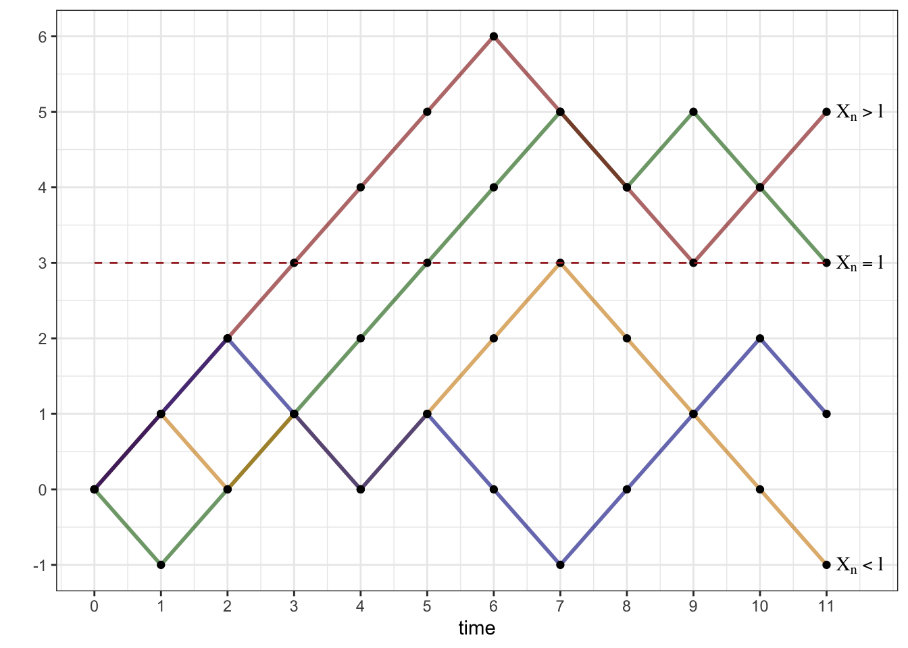
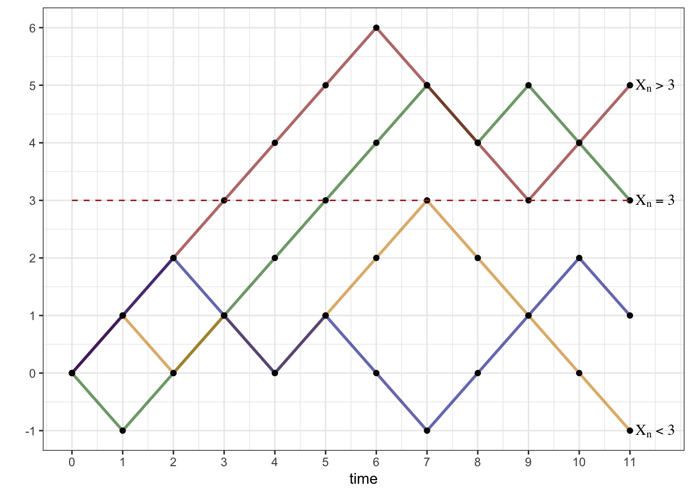
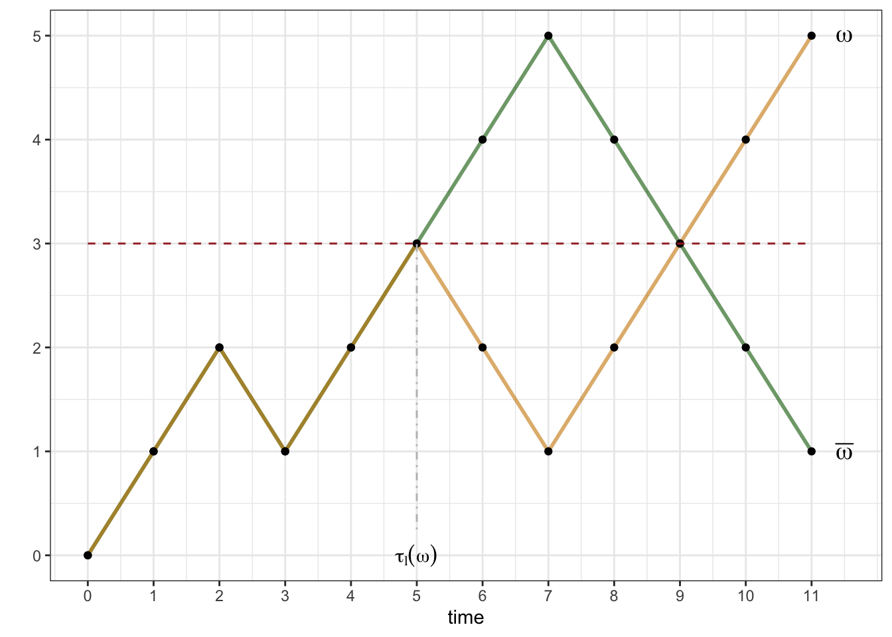
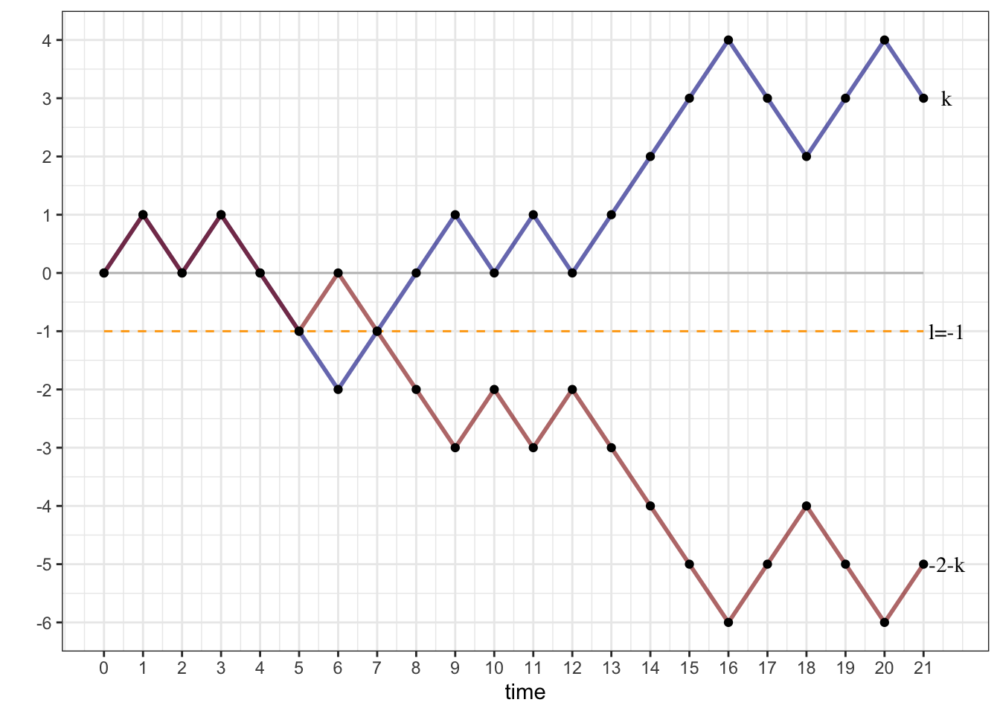
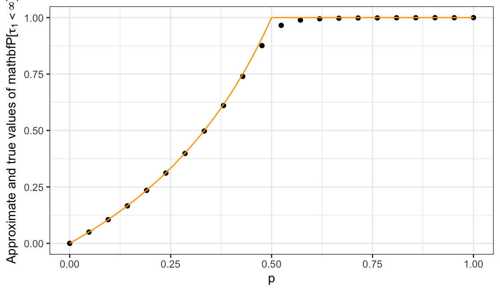

Chapter 4 More about Random Walks
4.1 The reflection principle
Counting trajectories in order to compute probabilities is a powerful method, as our next example shows. It also reveals a potential weakness of the combinatorial approach: it works best when all \(\omega\) are equally likely (e.g., when \(p=\tfrac{1}{2}\) in the case of the random walk).
We start by asking a simple question: what is the typical record value of the random walk, i.e., how far “up” (or “right” depending on your point of view) does it typically get? Clearly, the largest value it can attain is \(T\). This happens only when all coin tosses came up \(+1\), an extremely unlikely event - its probability is \(2^{-T}\). On the other hand, this maximal value is at least \(0\), since \(X_0=0\), already. A bit of thought reveals that any value between those two extremes is possible, but it is not at all easy to compute their probabilities.
More precisely, if \(\{X_n\}\) is a simple random walk with time horizon
\(T\). We define its running-maximum process \(\{M_n\}_{n\in {\mathbb{N}}_0}\) by
\[M_n=\max(X_0,\dots, X_n),\ \text{ for }0 \leq n \leq T,\]
and ask what the probabilities \({\mathbb{P}}[M_n = k]\) for \(k=0,\dots, n\) are.
An easy numerical solution to this problem can be given by simulation. We reuse the function
simulate_walk defined at the beginning of the chapter, but also employ a new function, called apply which “applies” a function to each row (or column) of a data frame or a matrix. It seems to be tailor-made for our purpose7 because we want to compute the maximum of each row of the simulation matrix (remember - the row means keep the realization fixed, but vary the time-index \(n\)). The syntax of apply is simple - it needs the data frame, the margin (rows are coded as 1 and columns as 2; so when the margin is 1, the function is applied row-wise and when the margin is 2, the function is applied column-wise) and the function to be applied (max in our case). The output is a vector of size nsim with all row-wise maxima:
walk = simulate_walk(nsim = 100000, T = 12, p = 0.5)
M = apply(walk, 1, max)
hist(M, breaks = seq(-0.5, 12.5, 1), probability = TRUE)
The overall shape of the distribution is as we expected; the support is \(\{0,1,2,\dots, 12\}\) and the probabilities tend to decrease as \(k\) gets larger. The unexpected feature is that \({\mathbb{P}}[ M_{12} = 1]\) seems to be the same as \({\mathbb{P}}[ M_{12} = 2]\). It drops after that for \(k=3\), but it looks like \({\mathbb{P}}[ M_{12} = 3] = {\mathbb{P}}[ M_{12}=4]\) again. Somehow the probability does not seem to change at all from \(2i-1\) to \(2i\).
Fortunately, there is an explicit formula for the distribution of \(M_n\) and we can derive it by a nice counting trick known as the reflection principle.
As usual, we may assume without loss of generality that \(T=n\) since the values of \(\delta_{n+1}, \dots, \delta_T\) do not affect \(M_n\) at all. We start by picking a level \(l\in\{1,\dots, n\}\) and first compute the probability \({\mathbb{P}}[M_n\geq l]\) - it will turn out to be easier than attacking \({\mathbb{P}}[ M_n=l]\) directly. The symmetry assumption \(p=1/2\) ensures that all trajectories are equally likely, so we can do this by counting the number of trajectories whose maximal level reached is at least \(l\), and then multiply by \(2^{-n}\).
What makes the computation of \({\mathbb{P}}[M_n \geq l]\) a bit easier than that of \({\mathbb{P}}[ M_n = l]\) is the following equivalence
\[M_n\geq l \text{ if and only if } X_k=l \text{ for some } k.\]
In words, the set of trajectories whose maximum is at least \(l\) is exactly the same as the set of trajectories that hit the level \(l\) at some time. Let us denote the set of trajectories \(\omega\) with this property by \(A_l\), so that \({\mathbb{P}}[ M_n \geq l] = {\mathbb{P}}[A_l]\). We can further split \(A_l\) into three disjoint events \(A_l^{>}\), \(A_l^{=}\) and \(A_l^{<}\), depending on whether \(X_n<l\), \(X_n=l\) or \(X_n>l\). In the picture below, the red trajectory is in \(A_l^{>}\), the green trajectory in \(A_l^=\) the orange one in \(A_l^{<}\), while the blue one is not in \(A_l\) at all.

With the set of all trajectories \(\Omega\) partitioned into four disjoint classes, namely \(A^>_l, A^=_l, A^<_l\) and \((A_l)^c\), we are ready to reveal the main idea behind the reflection principle:
To see why that is true, start by choosing a trajectory \(\omega\in A_l^{>}\) and denoting by \(\tau_l(\omega)\) the first time \(\omega\) visits the level \(l\). Since \(\omega \in A^>\) such a time clearly exists. Then we associate to \(\omega\) another trajectory, call it \(\bar{\omega}\), obtained from \(\omega\) in the following way:
- \(\bar{\omega}\) and \(\omega\) are the same until the time \(\tau_l(\omega)\).
- After that, \(\bar{\omega}\) is the reflection of \(\omega\) around the level \(l\).
Equivalently the increments of \(\omega\) and \(\bar{\omega}\) are exactly the same up to time \(\tau(\omega)\), and exactly the opposite afterwards. In the picture below - the orange trajectory is \(\omega\) and the green trajectory is its “reflection” \(\bar{\omega}\); note that they overlap until time \(5\):
## Warning: Using `size` aesthetic for lines was deprecated in ggplot2 3.4.0.
## ℹ Please use `linewidth` instead.
## This warning is displayed once every 8 hours.
## Call `lifecycle::last_lifecycle_warnings()` to see where this warning was
## generated.Convince yourself that this procedure establishes a bijection between the sets \(A_l^{>}\) and \(A_l^{<}\), making these two sets equal in size.
So why is it important to know that \(\# A_l^> = \# A_l^<\)? Because the trajectories in
\(A_l^>\) (as well as in \(A_l^=\)) are easy to count.
For them, the requirement that the level
\(l\) is hit at a certain point is redundant; if you are at or above \(l\)
at the very end, you must have hit \(l\) at a certain point.
Therefore, \(A_l^{>}\) is simply the family of those trajectories
\(\omega\) whose final positions \(X_n(\omega)\) are somewhere strictly above \(l\). Hence,
\[\begin{align}
{\mathbb{P}}[A_l^{>}] &= {\mathbb{P}}[ X_n=l+1 \text{ or } X_n = l+2 \text{ or } \dots \text{ or }
X_n=n]\\ & = \sum_{k=l+1}^n {\mathbb{P}}[X_n = k]
\end{align}\]
Similarly, \[\begin{aligned} {\mathbb{P}}[ A_l^{=}] = {\mathbb{P}}[X_n=l].\end{aligned}\] Finally, by the reflection principle, \[\begin{aligned} {\mathbb{P}}[ A_l^{<}] = {\mathbb{P}}[A_l^{>}] = \sum_{k=l+1}^n {\mathbb{P}}[X_n=k].\end{aligned}\]
Putting all of this together, we get \[\begin{aligned} {\mathbb{P}}[ A_l ] = {\mathbb{P}}[ X_n=l] + 2 \sum_{k=l+1}^n {\mathbb{P}}[X_n=k],\end{aligned}\] so that \[\begin{aligned} {\mathbb{P}}[ M_n = l ] &= {\mathbb{P}}[ M_n \geq l] - {\mathbb{P}}[ M_n \geq l+1]\\ & = {\mathbb{P}} [A_l] - {\mathbb{P}} [A_{l+1}]\\ & = {\mathbb{P}}[ X_n = l] + 2 {\mathbb{P}}[X_n = l+1] + 2{\mathbb{P}}[X_n = l+2]+ \dots + 2{\mathbb{P}}[ X_n=n] -\\ & \qquad \qquad \quad \ - {\mathbb{P}}[ X_n = l+1] - 2 {\mathbb{P}}[X_n = l+2] - \dots - 2{\mathbb{P}}[ X_n=n]\\ &= {\mathbb{P}}[ X_n=l] + {\mathbb{P}}[X_n=l+1] \end{aligned}\]
Now that we have the explicit expression \[ {\mathbb{P}}[ M_n = l ] = {\mathbb{P}}[ X_n=l] + {\mathbb{P}}[X_n = l+1] \text{ for } l=0,1,\dots, n,\] we can shed some light on the fact on the shape of the histogram for \(M_n\) we plotted above. Since \({\mathbb{P}}[X_n=l]\) is \(0\) if \(n\) and \(l\) don’t have the same parity, it is clear that only one of the probabilities \({\mathbb{P}}[X_n=l]\) and \({\mathbb{P}}[X_n=l+1]\) can be positive. It follows that, for \(n\) even, we have \[\begin{align} {\mathbb{P}}[ M_n =0] &= {\mathbb{P}}[X_n=0] + {\mathbb{P}}[X_n=1] = {\mathbb{P}}[X_n=0]\\ {\mathbb{P}}[M_n=1] &= {\mathbb{P}}[ X_n=1] + {\mathbb{P}}[X_n=2] = {\mathbb{P}}[X_n=2]\\ {\mathbb{P}}[M_n=2] &= {\mathbb{P}}[ X_n=2] + {\mathbb{P}}[X_n=3] = {\mathbb{P}}[X_n=2]\\ {\mathbb{P}}[M_n=3] &= {\mathbb{P}}[ X_n=3] + {\mathbb{P}}[X_n=4] = {\mathbb{P}}[X_n=4]\\ {\mathbb{P}}[M_n=4] &= {\mathbb{P}}[ X_n=4] + {\mathbb{P}}[X_n=5] = {\mathbb{P}}[X_n=4] \text{ etc.} \end{align}\] In a similar way, for \(n\) odd, we have \[\begin{align} {\mathbb{P}}[ M_n =0] &= {\mathbb{P}}[X_n=0] + {\mathbb{P}}[X_n=1] = {\mathbb{P}}[X_n=1]\\ {\mathbb{P}}[M_n=1] &= {\mathbb{P}}[ X_n=1] + {\mathbb{P}}[X_n=2] = {\mathbb{P}}[X_n=1]\\ {\mathbb{P}}[M_n=2] &= {\mathbb{P}}[ X_n=2] + {\mathbb{P}}[X_n=3] = {\mathbb{P}}[X_n=3]\\ {\mathbb{P}}[M_n=3] &= {\mathbb{P}}[ X_n=3] + {\mathbb{P}}[X_n=4] = {\mathbb{P}}[X_n=3]\\ {\mathbb{P}}[M_n=4] &= {\mathbb{P}}[ X_n=4] + {\mathbb{P}}[X_n=5] = {\mathbb{P}}[X_n=5] \text{ etc.} \end{align}\]
Here is a example of a typical problem where the reflection principle (i.e., the formula for \({\mathbb{P}}[M_n=k]\)) is used:
Problem 4.1 Let \(X\) be a simple symmetric random walk. What is the probability that \(X_n\leq 0\) for all \(0\leq n \leq T\)?
Solution. This is really a question about the maximum, but in disguise. The walk will stay negative or \(0\) if and only if its running maximum \(M_T\) at time \(T\) takes the value \(0\). By our formula for \({\mathbb{P}}[M_n=l]\) we have \[ {\mathbb{P}}[M_T=0] = {\mathbb{P}}[X_T=0] + {\mathbb{P}}[X_T = 1].\] When \(T=2N\) this evaluates to \(\binom{2N}{N} 2^{-2N}\), and when \(T=2N-1\) to \(\binom{2N-1}{N} 2^{-(2N-1)}\).
Problem 4.2 What is the probability that a simple symmetric random walk will reach the level \(l=1\) in \(T\) steps or fewer? What happens when \(T\to\infty\)?
Solution. The first question is exactly the opposite of the question in our previous example, so the answer is \[ 1 - {\mathbb{P}}[M_T=0] = 1- {\mathbb{P}}[X_T=0] - {\mathbb{P}}[X_T=1].\] As above, this evaluates to \(\binom{2N}{N} 2^{-2N}\) when \(T=2N\) is even (we skip the case of odd \(T\) because it is very similar). When \(N\to\infty\), we expect \(\binom{2N}{N}\) to go to \(+\infty\) and \(2^{-2N}\) to go to \(0\), so it is not immediately clear which term will win. One way to make a guess is to think about it probabilistically: we are looking at the probability \({\mathbb{P}}[X_{2N}=0]\) that the random walk takes the value \(0\) after exactly \(2N\) steps. Even though no other (single) value is more likely to happen, there are so many other values \(X_{2N}\) could take (anything even from \(-2N\) to \(2N\) except for \(0\)) that we conjecture that its probability converges to \(0\). A formal mathematical argument which proves that our conjecture is, indeed correct, involves Stirling’s formula:
\[ N! \sim \sqrt{2 \pi N} \left( \frac{N}{e} \right)^N \text{ where } A_N \sim B_N \text{ means that } \lim_{N\to\infty} \frac{A_N}{B_N}=1. \]
We write \(\binom{2N}{N} = \tfrac{(2N)!}{N! N!}\) and apply Stirling’s formula to each factorial (let’s skip the details) to conclude that \[ \binom{2N}{N} 2^{-2n}\sim \frac{1}{\sqrt{N \pi}} \text{ so that } \lim_{N\to\infty} \binom{2N}{N} 2^{-2n} = 0 \]
The result of the previous problem implies the following important fact:
The simple symmetric random walk will reach the level \(1\), with certainty, given enough time.
Indeed, we just proved that the probability of this not happening during the first \(T\) steps shrinks down to \(0\) as \(T\to\infty\).
But wait, there is more! By symmetry, the level \(1\) can be replaced by \(-1\). Also, once we hit \(1\), the random walk “renews itself” (this property is called the Strong Markov Property and we will talk about it later), so it will eventually hit the level \(2\), as well. Continuing the same way, we get the following remarkable result
Sooner or later, the symple symmetric random walk will visit any level.
We close this chapter with an application of the reflection principle to a classical problem in probability and combinatorics. Feel free to skip it if you want to.
Problem 4.3 (Extra Credit) Suppose that two candidates, Daisy and Oscar, are running for office, and \(T \in{\mathbb{N}}\) voters cast their ballots. Votes are counted the old-fashioned way, namely by the same official, one by one, until all \(T\) of them have been processed. After each ballot is opened, the official records the number of votes each candidate has received so far. At the end, the official announces that Daisy has won by a margin of \(k>0\) votes, i.e., that Daisy got \((T+k)/2\) votes and Oscar the remaining \((T-k)/2\) votes. What is the probability that at no time during the counting has Oscar been in the lead?
Solution. We assume that the order in which the official counts the votes is completely independent of the actual votes, and that each voter chooses Daisy with probability \(p\in (0,1)\) and Oscar with probability \(q=1-p\). We don’t know a priori what \(p\) is, and, as it turns out, we don’t need to!
For \(0 \leq n \leq T\), let \(X_n\) be the number of votes received by Daisy minus the number of votes received by Oscar in the first \(n\) ballots. When the \(n+1\)-st vote is counted, \(X_n\) either increases by \(1\) (if the vote was for Daisy), or decreases by 1 otherwise. The votes are independent of each other and \(X_0=0\), so \(X_n\), \(0\leq n \leq T\) is a simple random walk with the time horizon \(T\). The probability of an up-step is \(p\in (0,1)\), so this random walk is not necessarily symmetric. The ballot problem can now be restated as follows:
For a simple random walk \(\{X_n\}_{0\leq n \leq T}\), what is the probability that \(X_n\geq 0\) for all \(n\) with \(0\leq n \leq T\), given that \(X_T=k\)?
The first step towards understanding the solution is the realization that the exact value of \(p\) does not matter. Indeed, we are interested in the conditional probability \({\mathbb{P}}[ F|G]={\mathbb{P}}[F\cap G]/{\mathbb{P}}[G]\), where \(F\) denotes the set of \(\omega\) whose corresponding trajectories always stay non-negative, while the trajectories corresponding to \(\omega\in G\) reach \(k\) at time \(T\). Each \(\omega \in G\) consists of exactly \((T+k)/2\) up-steps (\(1\)s) and \((T-k)/2\) down steps (\(-1\)s), so its probability weight is equal to \(p^{ (T+k)/2} q^{(T-k)/2}\). Therefore, with \(\# A\) denoting the number of elements in the set \(A\), we get \[\begin{aligned} {\mathbb{P}}[ F|G]=\frac{{\mathbb{P}}[F\cap G]}{{\mathbb{P}}[G]}=\frac{\# (F\cap G) \ p^{ (T+k)/2} q^{(T-k)/2}}{ \# G \ p^{ (T+k)/2} q^{(T-k)/2}}=\frac{\#(F\cap G)}{\# G}.\end{aligned}\] This is quite amazing in and of itself. This conditional probability does not depend on \(p\) at all!
Since we already know how to count the number of elements in \(G\) (there are \(\binom{T}{(T+k)/2}\)), “all” that remains to be done is to count the number of elements in \(G\cap F\). The elements in \(G \cap F\) form a portion of all the elements in \(G\) whose trajectories don’t hit the level \(l=-1\); this way, \(\#(G\cap F)=\#G-\#H\), where \(H\) is the set of all paths which finish at \(k\), but cross (or, at least, touch) the level \(l=-1\) in the process. Can we use the reflection principle to find \(\# H\)? Yes, we can. In fact, you can convince yourself that the reflection of any trajectory corresponding to \(\omega \in H\) around the level \(l=-1\) after its last hitting time of that level produces a trajectory that starts at \(0\) and ends at \(-k-2\), and vice versa.

The number of paths from \(0\) to \(-k-2\) is easy to count - it is equal to \(\binom{T}{(T+k)/2+1}\). Putting everything together, we get \[{\mathbb{P}}[ F|G]=\frac{\binom{T}{n_1}-\binom{T}{n_1+1}} {\binom{T}{n_1}}=\frac{k+1}{n_1+1},\text{ where }n_1=\frac{T+k}{2}.\] The last equality follows from the definition of binomial coefficients \(\binom{T}{i}=\frac{T!}{i!(T-i)!}\).
The Ballot problem has a long history (going back to at least 1887) and has spurred a lot of research in combinatorics and probability. In fact, people still write research papers on some of its generalizations. When posed outside the context of probability, it is often phrased as “in how many ways can the counting be performed …” (the difference being only in the normalizing factor \(\binom{T}{n_1}\) appearing in Example above). A special case \(k=0\) seems to be even more popular - the number of \(2n\)-step paths from \(0\) to \(0\) never going below zero is called the \(n\)-th Catalan number and equals \[\begin{align} C_n=\frac{1}{n+1} \binom{2n}{n}. \end{align}\]
Problem 4.4 (Extra Credit) Given \(n\in{\mathbb{N}}\), compute \({\mathbb{P}}[ \tau_1 = 2n+1 ]\) for a simple, but possibly biased, random walk. (Note: Clearly, \({\mathbb{P}}[ \tau_1=2n]=0\).)
Solution. Let \(A\) denote the set of all trajectories of length \(2n+1\) that hit \(1\) for the first time at time \(2n+1\), and let \(A'\) be the set of all trajectories of length \(2n\) which stay at or below \(0\) at all times and take the value \(0\) at time \(2n\). Clearly, each trajectory in \(A\) is a trajectory in \(A'\) with \(1\) attached at the very end, so that \(\# A = \# A'\).
By the (last part) of the previous problem, \(\# A' = \frac{1}{n+1} \binom{2n}{n}\) (the \(n^{\text{th}}\) Catalan number). As above, all paths in \(A\) have the same probability weight, namely \(p^{n+1} q^n\), so \[ {\mathbb{P}}[ \tau_1 = 2n+1]= p^{n+1} q^n \frac{1}{n+1} \binom{2n}{n}.\]
Problem 4.5 (Extra Credit) Given \(p\in (0,1)\),
- compute \({\mathbb{P}}[\tau_1<\infty]\);
- decide whether or not \({\mathbb{E}}[\tau_1]<\infty\);
- compute, heuristically, the value of \({\mathbb{E}}[\tau_1]\) for those \(p\) for which it is finite.
Solution.
Using the previous problem, we need to sum the following series \[\sum_{k=0}^{\infty} {\mathbb{P}}[\tau_1=k] = \sum_{n=0}^{\infty} {\mathbb{P}}[ \tau_1 = 2n+1] = \sum_{n=0}^{\infty} p^{n+1} q^{n} \frac{1}{n+1} \binom{2n}{n} = p \sum_{n=0}^{\infty} (pq)^n \frac{1}{n+1} \binom{2n}{n}.\] The sum looks difficult, so let us plot a numerical approximation of its value for different values of the parameter \(p\) (the true value is plotted in orange):

We conjecture that \({\mathbb{P}}[ \tau_1 <\infty ] = 1\) for \(p\geq \tfrac{1}{2}\), but \({\mathbb{P}}[ \tau_1<\infty]<1\) for \(p<\tfrac{1}{2}\). Indeed, using methods beyond the scope of these notes, it can be shown that our conjecture is true and that \[ {\mathbb{P}}[ \tau_1<\infty ] =\begin{cases} 1, & p \geq \tfrac{1}{2}\\ \frac{p}{q}, & p<\tfrac{1}{2}. \end{cases} \]
Since \({\mathbb{P}}[ \tau_1= \infty]>0\) for \(p<\tfrac{1}{2}\), we can immediately conclude that \({\mathbb{E}}[\tau_1]=\infty\) in that case. Therefore, we assume that \(p\geq \tfrac{1}{2}\), and consider the sum \[ {\mathbb{E}}[\tau_1] = \sum_{k=0}^{\infty} k {\mathbb{P}}[\tau_1 = k] = \sum_{n=0}^{\infty} (2n+1) {\mathbb{P}}[ \tau_1 = 2n+1] = \sum_{n=0}^{\infty} p^{n+1} q^{n} \frac{2n+1}{n+1} \binom{2n}{n}.\] We have already seen that (by Stirling’s formula) we have \(\binom{2n}{n} \sim \frac{2^{2n}}{\sqrt{\pi n}}\), so the question reduces to the one about convergence of the following, simpler, series: \[ \sum_{n=1}^{\infty} \frac{1}{\sqrt{n}} p^n q^{n} 2^{2n} = \sum_{n=1}^{\infty} \frac{1}{\sqrt{n}} (4pq)^n.\] When \(p=\tfrac{1}{2}\), we have \(4pq=1\), and the series above becomes a \(p\)-series with \(p=\tfrac{1}{2}\). Hence, it diverges. On the other hand, when \(p>\tfrac{1}{2}\), \(4pq<1\), the terms of the series are dominated by the terms of the convergent geometric series \(\sum_{n=1}^{\infty} (4pq)^n\). Therefore, it, itself, must converge. All in all: \[ {\mathbb{E}}[\tau_1] = \begin{cases} \infty, & p\leq \tfrac{1}{2}, \\ <\infty, & p > \tfrac{1}{2}. \end{cases}. \]
Let \(a_j = {\mathbb{E}}^{j}[\tau_1]\), where \({\mathbb{E}}^{j}\) means that the random walk starts from the level \(j\), i.e., \(X_0=j\), instead of the usual \(X_0=0\). Think about why it is plausible that the following relations hold for the sequence \(a_n\): \[a_1 = 0,\text{ and } a_j = 1 + p a_{j+1} + q a_{j-1}.\] We guess that \(a_j\) has the form \(a_j = c(1-j)\), for \(j<1\) (why?) and plug that guess into the above equation to get: \[ c(1-j) = 1 + p c (-j) + q c (2-j) = 1 - c - 2 c q + c(1-j).\] It follows that \(c = \tfrac{1}{1-2q} = \tfrac{1}{p-q}\). Thus, if you believe the heuristic, we have \[ {\mathbb{E}}[ \tau_1 ] = \begin{cases} \frac{1}{p-q}, & p>\tfrac{1}{2}, \\ + \infty, & p\leq \tfrac{1}{2}. \end{cases}\] (Note: If you have never seen it before, the approach we took here seems very unusual. Indeed, in order to find the value of \(a_0\) we decided to compute values for the elements of the whole sequence \(a_n\). This kind of thinking will appear many times later in the chapters on Markov Chains.)
4.2 Stopping times
A random time is simply a random variable which takes values in the set \({\mathbb{N}}_0\) - it is random, and it can be interpreted as a point in time. Not all random times are created equal, though: here are three examples based on a simple symmetric random walk \(X\):
\(\tau = 3\). This is the simplest random time - it always takes the value \(3\), no matter what. It is random only in the formal sense of the word (just as the constant random vairbale \(X=3\) is a random variable, but not a very interesting one). Constant random times, like \(\tau=3\), are called deterministic times.
\(\tau=\tau_1\) where \(\tau_1\) is the first time \(X\) hits the level \(1\). It is no longer constant - it clearly depends on the underlying trajectory of the random walk: sometimes \(\tau_1=1\); other times it can be very large.
\(\tau=\tau_{\max}\) where \(\tau_{\max}\) is the first time \(X\) takes its maximal value in the interval \(\{0,1,\dots, 100\}\). The random time \(\tau_{\max}\) is clearly non-constant, but it differs from \(\tau=3\) or \(\tau=\tau_1\) in a significant way.
Indeed, the first two examples have the following property:
Given a time \(n\), you can tell whether \(\tau=n\) or not using only the information you have gathered by time \(n\).
The third one does not. Random times with this property are called stopping times. Here is a more precise, mathematical, definition. You should note that we allow our stopping times to take the value \(+\infty\). The usual interpretation is that whatever the stopping time is modeling never happens.
Definition. A random variable \(\tau\) taking values in \({\mathbb{N}}_0\cup\{+\infty\} = \{0,1,2,\dots, +\infty\}\) is said to be a stopping time with respect to the process \(\{X_n\}_{n\in {\mathbb{N}}_0}\) if for each \(n\in{\mathbb{N}}_0\) there exists a function \(G^n:{\mathbb{R}}^{n+1}\to \{0,1\}\) such that \[\mathbf{1}_{\{\tau=n\}}=G^n(X_0,X_1,\dots, X_n), \text{ for all } n\in{\mathbb{N}}_0.\]
The functions \(G^n\) are called the decision functions, and should be thought of as a black box which takes the values of the process \(\{X_n\}_{n\in {\mathbb{N}}_0}\) observed up to the present point and outputs either \(0\) or \(1\). The value \(0\) means keep going and \(1\) means stop. The whole point is that the decision has to be based only on the available observations and not on the future ones.
Alternatively, you can think of a stopping time as an R function whose input is a vector which represents a trajectory \(\omega\) of a random walk (or any other process) and the output is a nonnegative integer. This function needs to be such that if it “decides” to output the value \(k\), it had to have based its decision only on the first \(k\) components of \(\omega\). This means that if the output corresponding to the input trajectory \(\omega\) is \(k\), and \(\omega'\) is another trajectory whose first components match those of \(\omega\), then the output corresponding to \(\omega\)’ must also be \(k\).
Now that we know how to spot stopping times, let’s list some examples:
The simplest examples of stopping times are (non-random) deterministic times. Just set \(\tau=5\) (or \(\tau=723\) or \(\tau=n_0\) for any \(n_0\in{\mathbb{N}}_0\cup\{+\infty\}\)), no matter what the state of the world \(\omega\in\Omega\) is. The family of decision rules is easy to construct: \[G^n(x_0,x_1,\dots, x_n)=\begin{cases} 1,& n=n_0, \\ 0, & n\not= n_0.\end{cases}.\] Decision functions \(G^n\) do not depend on the values of \(X_0,X_1,\dots, X_n\) at all. A gambler who stops gambling after 20 games, no matter what the winnings or losses are uses such a rule.
Probably the most well-known examples of stopping times are (first) hitting times. They can be defined for general stochastic processes, but we will stick to simple random walks for the purposes of this example. So, let \(X_n=\sum_{k=0}^n \delta_k\) be a simple random walk, and let \(\tau_l\) be the first time \(X\) hits the level \(l\in{\mathbb{N}}\). More precisely, we use the following slightly non-intuitive but mathematically correct definition \[\tau_l=\min \{ n\in{\mathbb{N}}_0\, : \, X_n=l\}.\] The set \( \{ n\in{\mathbb{N}}_0\, : \, X_n=l\}\) is the collection of all time-points at which \(X\) visits the level \(l\). The earliest one - the minimum of that set - is the first hitting time of \(l\). In states of the world \(\omega\in\Omega\) in which the level \(l\) just never gets reached, i.e., when \( \{ n\in{\mathbb{N}}_0\, : \, X_n=l\}\) is an empty set, we set \(\tau_l(\omega)=+\infty\).
In order to show that \(\tau_l\) is indeed a stopping time, we need to construct the decision functions \(G^n\), \(n\in{\mathbb{N}}_0\). Let us start with \(n=0\). We would have \(\tau_l=0\) only in the (impossible) case \(X_0=l\), so we always have \(G^0(X_0)=0\). How about \(n\in{\mathbb{N}}\). For the value of \(\tau_l\) to be equal to exactly \(n\), two things must happen:
\(X_n=l\) (the level \(l\) must actually be hit at time \(n\)), and
\(X_{n-1}\not = l\), \(X_{n-2}\not= l\), …, \(X_{1}\not=l\), \(X_0\not=l\) (the level \(l\) has not been hit before).
Therefore, \[G^n(x_0,x_1,\dots, x_n)=\begin{cases} 1,& x_0\not=l, x_1\not= l, \dots, x_{n-1}\not=l, x_n=l\\ 0,&\text{otherwise}. \end{cases}\] The hitting time \(\tau_2\) of the level \(l=2\) for a particular trajectory of a symmetric simple random walk is depicted below:

How about something that is not a stopping time? Let \(T\in{\mathbb{N}}\) be an arbitrary time-horizon and let \(\tau_{\max}\) be the last time during \(0,\dots, T\) that the random walk visits its maximum during \(0,\dots, T\):

If you bought a share of a stock at time \(n=0\), had to sell it some time before or at \(T\) and had the ability to predict the future, this is one of the points you would choose to sell it at. Of course, it is impossible in general to decide whether \(\tau_{\max}=n\), for some \(n\in0,\dots, T-1\) without the knowledge of the values of the random walk after \(n\).
More precisely, let us sketch the proof of the fact that \(\tau_{\max}\) is not a stopping time. Suppose, to the contrary, that it is, and let \(G^n\) be the associated family of decision functions. Consider the following two trajectories: \((0,1,2,3,\dots, T-1,T)\) and \((0,1,2,3,\dots, T-1,T-2)\). They differ only in the direction of the last step. They also differ in the fact that \(\tau_{\max}=T\) for the first one and \(\tau_{\max}=T-1\) for the second one. On the other hand, by the definition of the decision functions, we have \[\mathbf{1}_{\{\tau_{\max}=T-1\}}=G^{T-1}(X_0,\dots, X_{T-1}).\] The right-hand side is equal for both trajectories, while the left-hand side equals to \(0\) for the first one and \(1\) for the second one. A contradiction.
4.3 Wald’s identity and Gambler’s ruin
One of the superpowers of stopping times is that they often behave just like deterministic times. The best way to understand this statement is in the context of the beautiful martingale theory. Unfortunately, learning about martingales would take an entire semester, so we have to settle for an illustrative example, namely, Wald’s identity.
Let \(\{\xi_n\}_{n\in{\mathbb{N}}}\) be a sequence of independent and identically distributed random variables. The example you should keep in mind is \(\xi_n = \delta_n\), where \(\delta_n\) are coin tosses in the definition of a random walk. We set \(X_n = \sum_{k=1}^n \xi_k\) and note that it is easy to compute \({\mathbb{E}}[X_n]\): \[ {\mathbb{E}}[ X_n ] = {\mathbb{E}}[ \xi_1+\dots + \xi_n] = {\mathbb{E}}[\xi_1] + \dots + {\mathbb{E}}[\xi_n] = n \mu, \text{ where } \mu = {\mathbb{E}}[\xi_1]={\mathbb{E}}[\xi_2]=\dots\] provided \({\mathbb{E}}[\xi_1]\) exists. The expected value \(\mu\) is the same for all \(\xi_1,\xi_2,\dots\) because they all have the same distribution. In words, the equality above tells us that the expected value of \(X\) moves with speed \(\mu\). Wald’s identity tells us that the same thing is true when the deterministic time \(n\) is replaced by a stopping time. To understand its statement below, we must first introduce a bit more notation. Let \(\{X_n\}_{n\in {\mathbb{N}}_0}\) be a stochastic process, and let \(\tau\) be a random time which never takes the value \(+\infty\). Remember that \(X_0, X_1, \dots\) are random variables, i.e., functions of the elementary outcome \(\omega\in\Omega\). The same is true for \(\tau\). Therefore, in order to define the random variable \(X_{\tau}\) we need to specify what its value is for any given \(\omega\): \[ X_{\tau} (\omega) = X_{n}(\omega) \text{ where } n=\tau(\omega).\] This is exactly what you would expect; the elementary outcome \(\omega\) not only tells us which trajectory of the process to consider, but also the time at which to do it. Note that when \(\tau=n\) is a deterministic time, \(X_{\tau}\) is exactly \(X_n\).
Theorem. (Wald’s identity) Let \(\{\xi_n\}_{n\in{\mathbb{N}}}\) be a sequence of independent and identically distributed random variables, and let \(X_n = \sum_{k=1}^n \xi_k\) be the associated random walk. If \({\mathbb{E}}[ |\xi_n|]<\infty\) and \(\tau\) is a stopping time for \(\{X_n\}_{n\in {\mathbb{N}}_0}\) such that \({\mathbb{E}}[\tau]<\infty\), then \[ {\mathbb{E}}[X_{\tau}] = {\mathbb{E}}[\tau] \mu \text{ where } \mu = {\mathbb{E}}[\xi_1] = {\mathbb{E}}[\xi_2] = \dots \]
Before we prove this theorem, here is a handy identity:
Problem 4.6 (The “tail formula” for the expectation) Let \(\tau\) be an \({\mathbb{N}}_0\)-valued random variable. Show that \[{\mathbb{E}}[\tau]=\sum_{k=1}^{\infty} {\mathbb{P}}[\tau \geq k].\]
Solution. Clearly, \({\mathbb{P}}[\tau\geq k] = {\mathbb{P}}[ \tau=k] + {\mathbb{P}}[\tau=k+1]+\dots\). Therefore,
\[ \begin{array}{cccccccc} \sum_{k=1}^{\infty} {\mathbb{P}}[\tau \geq k] &=& {\mathbb{P}}[ \tau=1] &+& {\mathbb{P}}[\tau=2] &+& {\mathbb{P}}[\tau=3] &+& \dots \\ && &+& {\mathbb{P}}[\tau=2] &+& {\mathbb{P}}[\tau=3] &+& \dots \\ && && &+& {\mathbb{P}}[\tau=3] &+& \dots \\ && && && &+& \dots \end{array} \] If you look at the “columns”, you will realize that the expression \({\mathbb{P}}[\tau=1]\) appears in this sum once, \({\mathbb{P}}[\tau=2]\) twice, \({\mathbb{P}}[\tau=3]\) three times, etc. Hence \[\sum_{k=1}^{\infty} {\mathbb{P}}[ \tau\geq k] = \sum_{n=1}^{\infty} n {\mathbb{P}}[\tau=n] = {\mathbb{E}}[\tau].\]
Problem 4.7 (Extra Credit) Prove Wald’s identity.
Solution. Here is another representation of the random variable \(X_{\tau}\): \[X_{\tau} = \sum_{k=1}^{\tau} \xi_k=\sum_{k=1}^{\infty} \xi_k \mathbf{1}_{\{k\leq \tau\}}.\] The idea behind it is simple: add all the values of \(\xi_k\) for \(k\leq \tau\) and keep adding zeros (since \(\xi_k \mathbf{1}_{\{k\leq \tau\}}=0\) for \(k>\tau\)) after that. Taking expectation of both sides and switching \({\mathbb{E}}\) and \(\sum\) (this can be justified, but the argument is technical and we omit it here) yields: \[ {\mathbb{E}}[\sum_{k=1}^{\tau} \xi_k]=\sum_{k=1}^{\infty} {\mathbb{E}}[ \mathbf{1}_{\{k\leq \tau\}}\xi_k]. \] Let us examine the term \({\mathbb{E}}[\xi_k\mathbf{1}_{\{k\leq \tau\}}]\) in some detail. We first note that \[\mathbf{1}_{\{k\leq \tau\}}=1-\mathbf{1}_{\{k>\tau\}}=1-\mathbf{1}_{\{k-1\geq \tau\}}=1-\sum_{j=0}^{k-1}\mathbf{1}_{\{\tau=j\}},\] so that \[ {\mathbb{E}}[\xi_k \mathbf{1}_{\{k\leq \tau\}}]={\mathbb{E}}[\xi_k]-\sum_{j=0}^{k-1}{\mathbb{E}}[ \xi_k \mathbf{1}_{\{\tau=j\}} ].\] By the assumption that \(\tau\) is a stopping time, the indicator \(\mathbf{1}_{\{\tau=j\}}\) can be represented as \(\mathbf{1}_{\{\tau=j\}}=G^j(X_0,\dots, X_j)\), and, because each \(X_i\) is just a sum of the increments \(\xi_1, \dots, \xi_i\), we can actually write \(\mathbf{1}_{\{\tau=j\}}\) as a function of \(\xi_1,\dots, \xi_j\) only: \(\mathbf{1}_{\{\tau=j\}}=H^j(\xi_1,\dots, \xi_j).\) By the independence of \((\xi_1,\dots, \xi_j)\) from \(\xi_k\) (because \(j<k\)) we have \[\begin{align} {\mathbb{E}}[\xi_k \mathbf{1}_{\{\tau=j\}}]&={\mathbb{E}}[ \xi_k H^j(\xi_1,\dots, \xi_j)]= {\mathbb{E}}[\xi_k] {\mathbb{E}}[ H^j(\xi_1,\dots, \xi_j)]={\mathbb{E}}[\xi_k] {\mathbb{E}}[\mathbf{1}_{\{\tau=j\}}]= {\mathbb{E}}[\xi_k]{\mathbb{P}}[T=j]. \end{align}\] Therefore, \[\begin{align} {\mathbb{E}}[\xi_k \mathbf{1}_{\{k\leq \tau\}}]&={\mathbb{E}}[\xi_k]-\sum_{j=0}^{k-1} {\mathbb{E}}[\xi_k] {\mathbb{P}}[\tau=j]={\mathbb{E}}[\xi_k] {\mathbb{P}}[\tau\geq k] =\mu {\mathbb{P}}[\tau\geq k], \end{align}\] where the last equality follows from the fact that all \(\xi_k\) have the same expectation, namely \(\mu\).
Putting it all together, we get \[\begin{align} {\mathbb{E}}[X_{\tau}]&={\mathbb{E}}[\sum_{k=1}^{\tau} \xi_k]=\sum_{k=1}^{\infty} \mu {\mathbb{P}}[\tau\geq k]=\mu \sum_{k=1}^{\infty} {\mathbb{P}}[\tau\geq k]= {\mathbb{E}}[\tau] \mu, \end{align}\] where we use the “tail formula” to get the last equality.
Problem 4.8 Show, by giving an example, that Wald’s identity does not necessarily hold if \(\tau\) is not a stopping time.
Solution. Let \(X\) be a simple symmetric random walk, and let \(\tau\) be a random time constructed like this: \[\begin{align} \tau = \begin{cases} 1, & X_1=1 \\ 0,& X_1=-1. \end{cases} \end{align}\] Then, \[\begin{align} X_{\tau} = \begin{cases} X_1, & X_1=1 \\ X_0, & X_1=-1, \end{cases} = \begin{cases} 1, & X_1=1 \\ 0,& X_1=-1. \end{cases} \end{align}\] and, therefore, \({\mathbb{E}}[ X_{\tau}] = 1 \cdot 1/2 + 0 \cdot 1/2 = 1/2\). On the other hand \(\mu={\mathbb{E}}[\xi_1]=0\) and \({\mathbb{E}}[\tau] = 1/2\), so \(1/2 = {\mathbb{E}}[X_{\tau}] \ne {\mathbb{E}}[\tau] \mu = 0\).
It is clear that \(\tau\) cannot be a stopping time, since Wald’s identity would hold for it if it were. To see that it is not more directly, consider the event when \(\tau=0\). Its occurrence depends on whether \(X_1=1\) or not, which is not known at time \(0\).
A famous use of Wald’s identity is in the solution of the following classical problem:
Problem 4.9 A gambler starts with \(\$x\) dollars and repeatedly plays a game in which she wins a dollar with probability \(\tfrac{1}{2}\) and loses a dollar with probability \(\tfrac{1}{2}\). She decides to stop when one of the following two things happens:
she goes bankrupt, i.e., her wealth hits \(0\), or
she makes enough money, i.e., her wealth reaches some predetermined level \(a>x\).
The “Gambler’s ruin” problem (dating at least to 1600s) asks the following question: what is the probability that the gambler will make \(a\) dollars before she goes bankrupt?
Solution. Let the gambler’s “wealth” \(\{W_n\}_{n\in {\mathbb{N}}_0}\) be modeled by a simple random walk starting from \(x\), whose increments \(\xi_k=\delta_k\) are coin-tosses. Then \(W_n=x+X_n\), where \(X_n = \sum_{k=1}^n \xi_k\) is a SSRW. Let \(\tau\) be the time the gambler stops. We can represent \(\tau\) in two different (but equivalent) ways. On the one hand, we can think of \(T\) as the smaller of the two hitting times \(\tau_{-x}\) and \(\tau_{a-x}\) of the levels \(-x\) and \(a-x\) for the random walk \(\{X_n\}_{n\in {\mathbb{N}}_0}\) (remember that \(W_n=x+X_n\), so these two correspond to the hitting times for the process \(\{W_n\}_{n\in {\mathbb{N}}_0}\) of the levels \(0\) and \(a\)). On the other hand, we can think of \(\tau\) as the first hitting time of the two-element set \(\{-x,a-x\}\) for the process \(\{X_n\}_{n\in {\mathbb{N}}_0}\). In either case, it is quite clear that \(\tau\) is a stopping time (can you write down the decision functions?).
When we talked about the maximum of the simple symmetric random walk, we proved that it hits any value if given enough time. Therefore, the probability that the gambler’s wealth will remain strictly between \(0\) and \(a\) forever is zero. So, \({\mathbb{P}}[T<\infty]=1\).
What can we say about the random variable \(X_{\tau}\) - the gambler’s wealth (minus \(x\)) at the random time \(\tau\)? Clearly, it is either equal to \(-x\) or to \(a-x\), and the probabilities \(p_0\) and \(p_a\) with which it takes these values are exactly what we are after in this problem. We know that, since there are no other values \(X_{\tau}\) can take, we must have \(p_0+p_a=1\). Wald’s identity gives us another equation for \(p_0\) and \(p_a\): \[{\mathbb{E}}[X_{\tau}]={\mathbb{E}}[\xi_1] {\mathbb{E}}[\tau]=0\cdot {\mathbb{E}}[\tau]=0 \text{ so that } 0 = {\mathbb{E}}[X_{\tau}]=p_0 (-x)+p_a (a-x).\]
We now have a system of two linear equations with two unknowns, and solving it yields \[p_0= \frac{a-x}{a}, \ p_a=\frac{x}{a}.\] It is remarkable that the two probabilities are proportional to the amounts of money the gambler needs to make (lose) in the two outcomes. The situation is different when \(p\not=\tfrac{1}{2}\).
In order to be able to use Wald’s identity, we need to check its conditions. We have already seen that \(\tau\) needs to be a stopping time, and not just any old random time. There are also two conditions about the expected values of \(\tau\) and of \(\xi_1\). If you read the above solution carefully, you will realize that we never checked whether \({\mathbb{E}}[\tau]<\infty\). We should have, but we did not because we still don’t have the mathematical tools to do it. We will see later that, indeed, \({\mathbb{E}}[\tau]<\infty\) for this particular stopping time. In general, the condition that \({\mathbb{E}}[\tau]<\infty\) is important, as the following simple example shows:
Problem 4.10 Let \(\{X_n\}_{n\in {\mathbb{N}}_0}\) be a simple symmetric random walk, and let \(\tau_1\) be the first hitting time of the level \(1\). Use Wald’s identity to show that \({\mathbb{E}}[\tau]=+\infty\).
Solution. Suppose, to the contrary, that \({\mathbb{E}}[\tau]<\infty\). Since \({\mathbb{E}}[\delta_1]<\infty\) and \(\tau_1\) is a stopping time, Wald’s identity applies: \[ {\mathbb{E}}[X_{\tau_1}] = {\mathbb{E}}[ \delta_1] \cdot {\mathbb{E}}[\tau_1].\] The right hand side is then equal to \(0\) because \({\mathbb{E}}[\delta_1]=0\). On the other hand, \(X_{\tau_1}=1\): the value of \(X_n\) when it first hits the level \(1\) is, of course, \(1\). This leads to a contradiction \(1={\mathbb{E}}[X_{\tau_1}] = {\mathbb{E}}[\delta_1] {\mathbb{E}}[\tau_1] = 0\). Therefore, our initial assumption that \({\mathbb{E}}[\tau_1]<\infty\) was wrong!
We close this chapter with another identity of Abraham Wald, namely ``Wald’s second identity’’. The original identity helped us compute the expected value of the position of a random walk at a stopping time. The second one computes the variance:
Theorem. (Wald’s second identity) Let \(\{\xi_n\}_{n\in{\mathbb{N}}}\) be a sequence of independent and identically distributed random variables, and let \(X_n = \sum_{k=1}^n \xi_k\) be the associated random walk. If \({\mathbb{E}}[ (\xi_n)^2]<\infty\) and \(\tau\) is a stopping time for \(\{X_n\}_{n\in {\mathbb{N}}_0}\) such that \({\mathbb{E}}[\tau]<\infty\), then \[ \operatorname{Var}[X_{\tau}]= {\mathbb{E}}[\tau] \sigma^2 \text{ where } \sigma^2 = \operatorname{Var}[\xi_1] = \operatorname{Var}[\xi_2] = \dots \]
The proof is similar (but more difficult) than the proof of Wald’s (first) identity, so we skip it.
4.4 Additional problems for Chapter 4
Problem 4.11 Let \(\{X_n\}_{n\in {\mathbb N}_0}\) be a simple symmetric random walk.
Compute \({\mathbb{P}}[ X_1 + X_2 + X_3 > 0]\).
Compute \({\mathbb{P}}[ X_3 = 1, X_9 = 1 \text{ and } X_{15} = 3]\).
Compute \({\mathbb{P}}[ X_n\geq -2 \text{ for all $n\leq 10$}]\).
Find the distribution (table) of the product \(X_1 X_3\).
Click for Solution
Solution.
There are \(8\) possible trajectories \((0,x_1,x_2,x_3)\) of length \(3\) that a random walk can take. Out of the \(8\), only the following three have \(x_1+x_2+x_3>0\): \[\begin{align} (0,1,2,3), (0,1,2,1) \text{ and } (0,1,0,1) \end{align}\] Since the walk is symmetric, each of those has probability \(1/8\), so \({\mathbb{P}}[ X_1+X_2+X_3>0] = 3/8\).
Since the increments of the random walk are independent, we have \[\begin{align} {\mathbb{P}}[ X_3 = 1, X_9=1 \text{ and } X_{15} = 3] & = {\mathbb{P}}[ X_1 = 1, \, X_9-X_1 = 0,\, X_{15} - X_9 = 2]\\ &= {\mathbb{P}}[ X_3 = 1]\times {\mathbb{P}}[ X_9 - X_3 =0 ] \times {\mathbb{P}}[ X_{15} - X_9 = 2] \end{align}\] Moreover, we have \({\mathbb{P}}[X_9 - X_3=0] = {\mathbb{P}}[ X_6 - X_0=0] = {\mathbb{P}}[ X_6 = 0]\). Similarly \({\mathbb{P}}[ X_{15} - X_9 = 2] = {\mathbb{P}}[ X_6 = 2]\). It remains to use the formula for probabilities of the form \({\mathbb{P}}[ X_n = k]\) from the notes to obtain
\[\begin{align} {\mathbb{P}}[ X_3 = 1, X_9=1 \text{ and } X_{15} = 3] & = \binom{3}{2} 2^{-3} \times \binom{6}{3} 2^{-6} \times \binom{6}{4} 2^{-6}= 2^{-15} \binom{6}{4} \binom{6}{3} \end{align}\]
By symmetry, this is the same as \({\mathbb{P}}[ X_n \leq 2, 0\leq n \leq 10] = {\mathbb{P}}[ M_{10} \leq 2]\), where \(M\) is the running-maximum process. By (the formula derived from) the reflection principle, we have \[\begin{align} {\mathbb{P}}[ M_n \leq 2] &= {\mathbb{P}}[ M_{10} = 2]+{\mathbb{P}}[M_{10} = 1] + {\mathbb{P}}[ M_{10} = 0] =({\mathbb{P}}[ X_{10} = 2] + {\mathbb{P}}[X_{10}=3]) +({\mathbb{P}}[X_{10} = 1] + {\mathbb{P}}[X_{10} = 2]) + ({\mathbb{P}}[ X_{10}=0] + {\mathbb{P}}[ X_{10}=1]) \\ &= {\mathbb{P}}[ X_{10} = 0] + 2 {\mathbb{P}}[ X_{10} = 2] = \binom{10}{5} 2^{-10} + 2 \times \binom{10}{6} 2^{-10}. \end{align}\]
There are several ways of solving this problem. The simplest one would be to list all \(8\) trajectories of the random walk of length \(3\) compute the value of \(X_1 \times X_3\) on each of them:
trajectory
value
(0,1,2,3)
3
(0,1,2,1)
1
(0,1,0,1)
1
(0,1,0,-1)
-1
(0,-1,0,1)
-1
(0,-1,0,-1)
1
(0,-1,-2,-1)
1
(0,-1,-2,-3)
3
Since each trajectory has probability \(1/8\), counting the number of times each of the possible values \(-1\), \(1\) or \(3\) appears gives us the distribution of \(X_1 X_3\):
-1
1
3
0.25
0.5
0.25
Alternatively, we can write \(X_1\) and \(X_3\) as a sum of independent coin tosses and obtain \[\begin{align} X_1 X_3 = X_1 (X_1+ X_3 - X_1) = X_1^2 + X_1(X_3 - X_1) = 1 + X_1 (X_3 - X_1). \end{align}\] The random variable \(X_3 - X_1\) has the same distribution as \(X_2\). It is, also, independent of \(X_1\), so multiplying it by \(X_1\) is equivalent to switching its sign with probability \(1/2\), independently of its value. But \(X_2\) is symmetric so this independent sign switch does not affect its distribution. Hence \(X_1(X_3-X_1)\) has the same distribution as \(X_2\), and since \(X_2\) takes values \(-2,0\) and \(2\) with probabilities \(0.25, 0.5\) and \(0.25\), we arrive quickly at the distribution table above.
Problem 4.12
Let \(\{X_n\}_{0\leq n \leq 10}\) be a simple symmetric random walk with time horizon \(T=10\). What is the probability it will never reach the level \(5\)?
A fair coin is tossed repeatedly, with the first toss resulting in \(H\) (i.e., heads). After that, each time the outcome of the coin matches the previous outcome, the player gets a dollar. If the two do not match, the player has to pay a dollar. The player stops playing once she “earns” \(10\) dollars. What is the probability that she will need at least 20 tosses (including the first one) to achieve that?
A fair coin is tossed repeatedly and the record of the outcomes is kept. Tossing stops the moment the total number of heads obtained so far exceeds the total number of tails by 3. For example, a possible sequence of tosses could look like HHTTTHHTHHTHH. What is the probability that the length of such a sequence is at most 10?
Click for Solution
Solution.
- This is the same as asking that its maximum \(M_{10}\) up to time \(T=10\) be \(\leq 4\). This can be further computed using the formula from class:
\[\begin{aligned} {\mathbb{P}}[ M_{10}\leq 4 ] &= {\mathbb{P}}[ M_{10}=0] + {\mathbb{P}}[ M_{10}=1] + {\mathbb{P}}[ M_{10} = 2] + {\mathbb{P}}[M_{10} = 3] + {\mathbb{P}}[ M_{10} = 4] \\ & = ({\mathbb{P}}[ X_{10} = 0] + {\mathbb{P}}[ X_{10} = 1] ) + ({\mathbb{P}}[ X_{10} = 1] + {\mathbb{P}}[ X_{10} = 2] ) \\ & + ({\mathbb{P}}[ X_{10} = 2] + {\mathbb{P}}[ X_{10} = 3] ) + ({\mathbb{P}}[ X_{10} = 3] + {\mathbb{P}}[ X_{10} = 4] )\\ & + ({\mathbb{P}}[ X_{10} = 4] + {\mathbb{P}}[ X_{10} = 5] ) \\ &= 2 ({\mathbb{P}}[ X_{10}=4] + {\mathbb{P}}[X_{10} = 2]) + {\mathbb{P}}[X_{10} =0] \\&= 2^{-10}( 2 \binom{10}{7} + 2 \binom{10}{6} + \binom{10}{5}) \end{aligned}\]
Let the outcomes of the coin tosses be denoted by \(\gamma_1 = H\), \(\gamma_2, \gamma_3, \dots\). We define the random variables \(\delta_1,\delta_2,\dots\) as follows: \(\delta_1 = 1\) if \(\gamma_2 = T\) and \(\delta_1 = -1\), otherwise. Similarly, \(\delta_2 = 1\) if \(\gamma_3 = \gamma_2\) and \(-1\) otherwise. It is clear that \(\delta_1,\delta_2,\dots\) is an iid sequence of coin tosses (just like in the definition of) of a simple symmetric random walk. After \(n\) tosses ( the first one), our gambler has \(X_n = \delta_1+\delta_2 + \dots + \delta_n\) dollars. She will need at least 19 tosses (excluding the first one) to reach \(10\) dollars if and only if the value of the running maximum process at time \(n=18\) is at most \(9\). Using the formula from the formula sheet, this evaluates to \[\begin{aligned} {\mathbb{P}}[ M_{18}\leq 9] &= \sum_{k=0}^{9} {\mathbb{P}}[ M_{18} = k] = \sum_{k=0}^{9} ({\mathbb{P}}[X_{18}=k] + {\mathbb{P}}[ X_{18} = k+1])\\ & = {\mathbb{P}}[ X_{18} =0 ] + 2\, {\mathbb{P}}[X_{18} = 2] + 2\, {\mathbb{P}}[X_{18} = 4] + \dots \\ & \qquad \dots + 2\, {\mathbb{P}}[ X_{18} = 8] + {\mathbb{P}}[ X_{18} = 10] \\ &= 2^{-18}\left( \binom{18}{9} + 2 \binom{18}{10} + 2\binom{18}{11} + 2 \binom{18}{12} + 2 \binom{18}{13} + \binom{18}{14}\right) \end{aligned}\] Btw, you could have gotten a seemingly different answer. Since it is impossible to reach \(10\) in exactly \(19\) steps (the parity is wrong), the required probability is also equal to \[\begin{align} {\mathbb{P}}[ M_{19}\leq 9] &= \sum_{k=0}^9 \Big( {\mathbb{P}}[ X_{19} = k] + {\mathbb{P}}[ X_{19} = k+1] \Big) = 2^{-19} \times 2 \times \sum_{k=1}^9 \binom{19}{(19+k)/2}\\ &= 2^{-18} \times \left( \binom{19}{10} + \binom{19}{11} + \dots + \binom{19}{16} \right). \end{align}\]
Let \(X_n\), \(n\in{\mathbb{N}}_0\) be the number of heads minus the number of tails obtained so far. Then, \(\{X_n\}_{n\in {\mathbb{N}}_0}\) is a simple symmetric random walk, and we stop tossing the coin when \(X\) hits \(3\) for the first time. This will happen during the first 10 tosses, if and only if \(M_{10} \geq 3\), where \(M_n\) denotes the (running) maximum of \(X\). According to the reflection principle, \[\nonumber \begin{split} {\mathbb{P}}[M_{10} \geq 3]&= {\mathbb{P}}[ X_{10} \geq 3 ] + {\mathbb{P}}[ X_{10} \geq 4]\\ & = 2( {\mathbb{P}}[X_{10}= 4] +{\mathbb{P}}[X_{10}= 6] +{\mathbb{P}}[X_{10}= 8] +{\mathbb{P}}[X_{10}= 10])\\ &= 2^{-9} \left[ \binom{10}{3}+\binom{10}{2}+\binom{10}{1}+\binom{10}{0} \right] = {\frac{11}{32}}. \end{split}\]
Problem 4.13 Luke starts a random walk, where each step takes him to the left or to the right, with the two alternatives being equally likely and independent of the previous steps. \(11\) steps to his right is a cookie jar, and Luke gets to take a (single) cookie every time he reaches that position. He performs exactly \(15\) steps, and then stops.
What is the probability that Luke will be exactly by the cookie jar when he stops?
What is the probability that Luke stops with with exactly \(3\) cookies in his hand?
What is the probability that Luke stops with at least one cookie in his hand?
Suppose now that we place a bowl of broccoli soup one step to the right of the cookie jar. It smells so bad that, if reached, Luke will throw away all the cookies he is currently carrying (if any) and run away pinching his nose. What is the probability that Luke will finish his \(15\)-step walk without ever encountering the yucky bowl of broccoli soup and with at least one cookie in his hand?
Problem 4.14 (Extra Credit) Let \(C_n = \frac{1}{n+1}\binom{2n}{n}\) denote the \(n\)-th Catalan number, as defined at the end of the discussion of the Balot problem above.
Use the reflection principle to show that \(C_n\) is the number trajectories \((x_0,\dots, x_{2n})\) of a random walk with time horizon \(T=2n\) such that \(x_k \geq 0\), for all \(k\in\{0,1,\dots, 2n\}\) and \(x_{2n}=0\).
Prove the Segner’s recurrence formula \(C_{n+1} = \sum_{i=0}^n C_{i} C_{n-i}\). .
Show that \(C_n\) is the number of ways the vertices of a regular \(2n\)-gon can be paired so that the line segments joining paired vertices do not intersect.
Problem 4.15 Let \(\{X_n\}_{n\in {\mathbb{N}}_0}\) be a simple symmetric random walk. Given \(n\in{\mathbb{N}}\), what is the probability that \(X\) does not visit \(0\) during the time interval \(1,\dots, n\).
Problem 4.16 Let \(\tau_{-1}\) be the hitting time of the level \({-1}\) for a simple biased random walk \(\{X_n\}_{n\in {\mathbb{N}}_0}\). Choose the correct answer(s) (they will depend on the value of the parameter \(p\)):
- \({\mathbb{P}}[\tau_{-1}<\infty] < 1\)
- \({\mathbb{E}}[\tau_{-1}]<\infty\),
- \({\mathbb{P}}[\tau_{-1}<\infty]=1\) and \({\mathbb{E}}[\tau_{-1}]=\infty\),
- \({\mathbb{P}}[\tau_{-1}<\infty]<1\) and \({\mathbb{E}}[\tau_{-1}]=\infty\),
- none of the above.
Click for Solution
Solution. Hitting the level \(-1\) for a biased random walk with parameter \(p\) is equivalent to hitting the level \(1\) for a biased random walk with parameter \(1-p\). The correct answers are: a and d, for \(p<1/2\), c, for \(p=1/2\) and b for \(p<1/2\).
Problem 4.17 Let \(\tau\) and \(\tilde{\tau}\) be two stopping times. Which of the following are necessarily stopping times, as well:
- \(\max(\tau,\widetilde{\tau})\)
- \(\min(\tau, \widetilde{\tau})\)
- \(\tau+\widetilde{\tau}\)
- \(\tau-\widetilde{\tau}\) (assuming that \(\tau \geq \widetilde{\tau}\))
Click for Solution
Solution.
Problem 4.18 Either one of the following \(4\) random times is not a stopping time for a simple random walk \(\{X_n\}_{n\in {\mathbb{N}}_0}\), or they all are. Choose the one which is not in the first case, or choose e. if you think they all are.
- the first hitting time of level \(4\),
- the first time \(n \geq 1\) such that \(X_{n}-X_{n-1}\not=X_{1}\),
- the first time the walk hits the level \(2\) or the first time the walk sinks below \(-5\), whatever happens first,
- the second time the walk hits the level \(5\) or the third time the walk hits the level \(-2\), whatever happens last
- none of the above.
Click for Solution
Solution. The correct answer is e. The first, second, third, or … hitting times of a level are stopping times, and so are their minima or maxima. Note that for two stopping times \(\tau_1\) and \(\tau_2\), the one that happens first is \(\min(\tau_1,\tau_2)\) and the one that happens last is \(\max(\tau_1,\tau_2)\).
Problem 4.19 At most one of the following \(4\) random times is a stopping time for a simple random walk \(\{X_n\}_{n\in {\mathbb{N}}_0}\). Either choose the one which you think is a stopping time, or choose e. if you think there are no stopping times among them.
- the first time \(n\) such that \(X_{n+1} > X_n\),
- the first time \(n\geq 1\) such that \(X_{n}-X_{n-1}=X_{3}\),
- the first time \(n\geq 0\) such that \(X_n\) gets (strictly) above its average \(\frac{1}{101}\sum_{k=0}^{100} X_k\),
- \(\tfrac{1}{2}(\tau_1 + \tau_3)\), where \(\tau_a\) denotes the first hitting time of the level \(a\).
- none of the above are stopping times.
Click for Solution
Solution. The correct answer is e. For each of the random times in a.-d. you need to know something about the future to tell whether they happened when they happened. For example, for \(c.\), you have no way of knowing (in general) whether or not \(X_{2} - X_1\) equals \(X_3\) at time \(2\).
The function
applyis often used as a substitute for aforloop because it has several advantages over it. First, the code is much easier to read and understand. Second,applycan easily be parallelized. Third, while this is not such a big issue anymore,forloops used to be orders of magnitude slower than the correspondingapplyin the past. R’sforloops got much better recently, but they still lag behindapplyin some cases. To be fair,applyis known to use more memory thanforin certain cases.↩︎